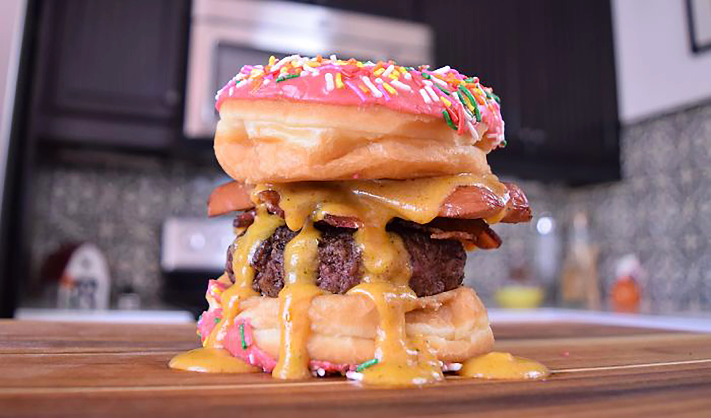

Donut burger!

A traditional food of the American fast foods, the donutburger is a mixture of the also traditional hamburger and the donuts. The donutburger may seem like a bit much, but trust me. Once you taste it, you'll always be yearning for more! If none of the other recipes fit your taste, surely this one will make you scream "yim yum!"
- Donuts
- Hamburger
- Willpower
- Remove the hamburger buns
- Place a donut on the top and bottom of the burger ingredients
- Pray.